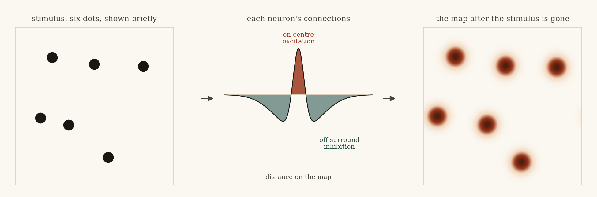
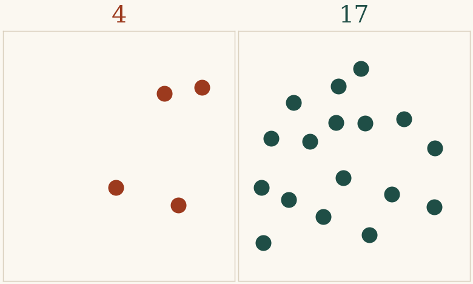
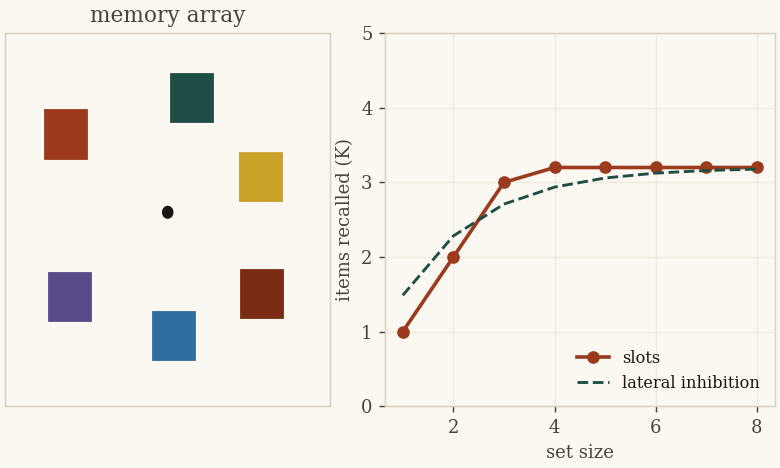
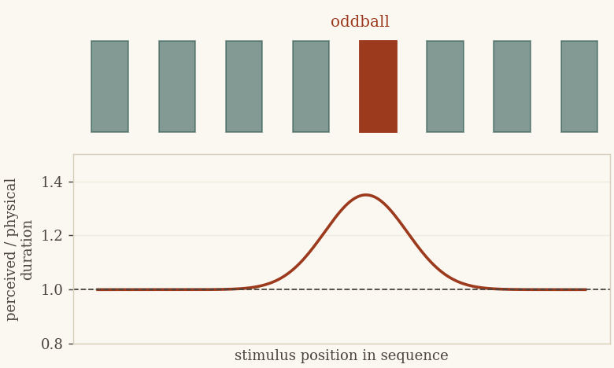
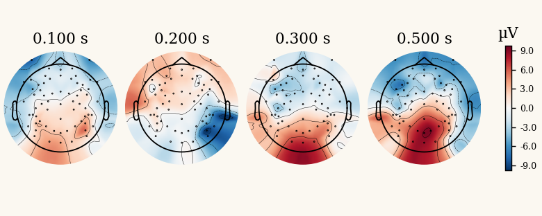
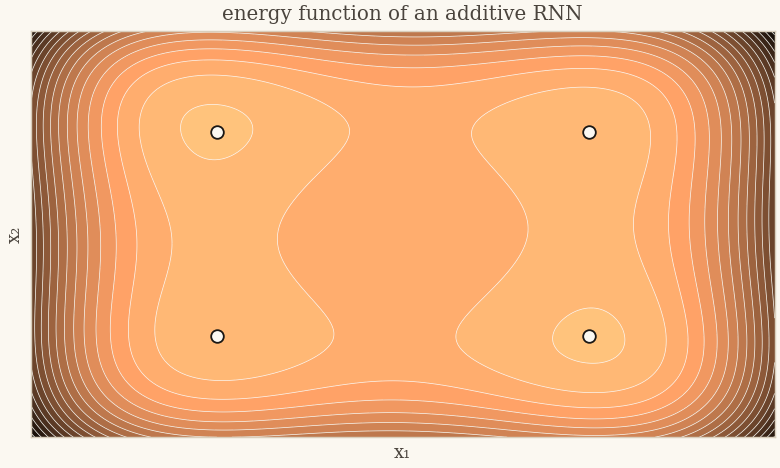
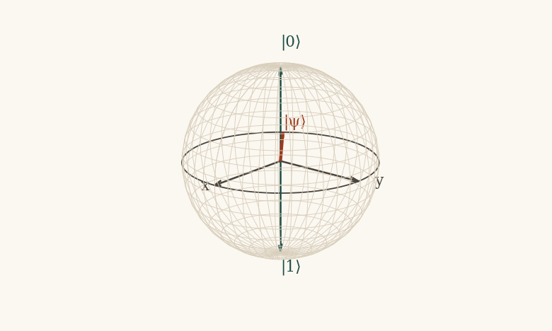
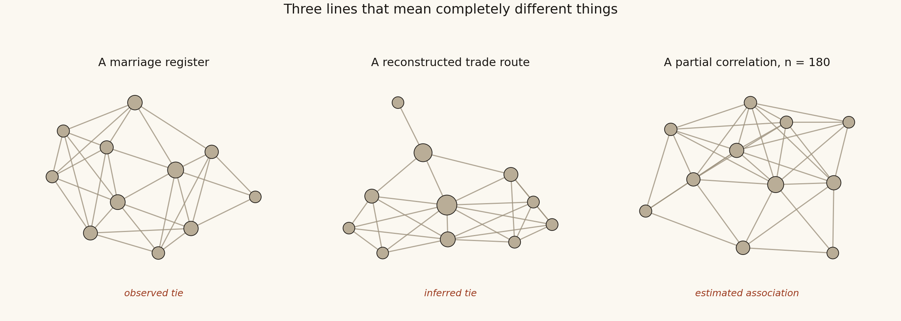
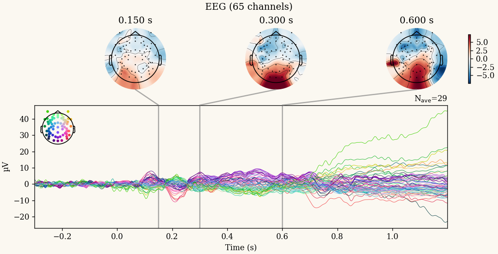

We build mathematical and computational accounts of how minds perceive number, hold things in memory, track time, process language, and reason — then test them with psychophysics, EEG, and neural-network modelling. Based at the School of Interwoven Arts and Sciences, Krea University.

A single mechanistic thread runs through the lab's work: the on-centre off-surround recurrent neural network (OCOS-RNN), a dynamical model whose lateral-inhibition parameter behaves as a shared computational signature across perception, memory, and time.

T1Subitizing, estimation, and the neural basis of the approximate number sense; computational phenotyping of numerical ability and dyscalculia screening in Indian school populations with the open DyscalcBattery.

T2Capacity limits, feature binding, change detection and the attentional blink, modelled with distance-dependent inhibition and tested with psychophysics and EEG.

T3Subjective time, the oddball expansion effect, and serial memory — accounted for through the dynamics of recurrent networks rather than a dedicated clock.

T4Covert and overt speech, P300 and SSVEP paradigms, ocular-artifact removal, and source-reconstructed BCI, including assistive interfaces for limited-mobility users. Recorded on the lab's 64-channel EGI system.

T5Energy-function and Hamiltonian formalisms for additive and shunting recurrent networks; stability analysis, oscillatory dynamics, synchronisation, and bio-inspired variance control for neuromorphic systems.

T6Mapping classical recurrent dynamics into open-system quantum neural networks — Hamiltonian formulations, decoherence, and modular quantum reservoir computing with high noise resilience.

Qualitative and quantitative social network analysis, taught entirely by hand — no software, no coding, no prerequisites. Sixteen Florentine families, fourteen Indian Ocean ports, and a small social world each group maps itself, ending with the question the whole camp is built on: the same picture can mean a marriage, an inferred trade route, or a partial correlation, and nothing in the image tells you which.
Programme Waiting list
From a raw 64-channel recording to a clean event-related potential, twice: scripted in Python with MNE, then replicated in MATLAB with EEGLAB. Every participant works on a real recording from the lab's covert/overt articulation study and leaves with a notebook, a script, and a Methods paragraph they can defend.
Photographs ProgrammeBooks, articles and chapters from the lab. Full record on ORCID.
The lab works closely with undergraduate and graduate students at Krea and with an international network of collaborators in numerical cognition, vision science, formal linguistics, and quantum information.
Principal Investigator. PhD in Cognitive Science, University of Hyderabad (2015). Postdoctoral work at the Centre for Vision Research, York University, and at IIT-Madras; visiting fellow at CIMeC, University of Trento.
David Melcher & Manuela Piazza (Trento), John K. Tsotsos (York), Surampudi Bapi Raju (IIIT-Hyderabad), Ravichander Janapati & Usha Desai (SR University), Anuj Shukla, Maganti Madhavilatha & Sayantan Mandal (Krea).
Bhavesh Verma (IISER Pune, now co-author on numerosity decoding), Aswini Madhira and Christelle M. Lewis (JRFs, SR University), Srishti Jain and Sumit Pareek (CCT Rajasthan), Adwitiya Roy (Krea capstone).
Appointments, education, talks, teaching and service. A full CV is available on request.
Cognition · Nature Human Behaviour · IEEE · IJCNN · Frontiers in Neuroscience
National Academy of Psychology · International Brain Research Organization · American Psychological Association
Medical Advisory Board, Emvera (digital health).
Prospective PhD and master's students, collaborators, and visitors are welcome to write. The lab is interested in motivated researchers across computational neuroscience, psychophysics, and machine intelligence.